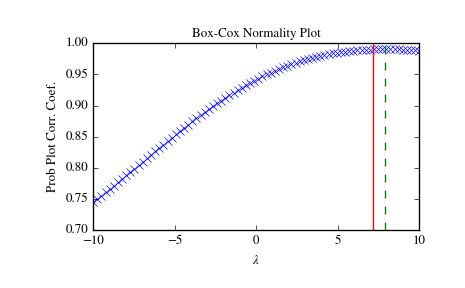

scipy.stats.boxcox_normmax¶
- scipy.stats.boxcox_normmax(x, brack=(-2.0, 2.0), method='pearsonr')[source]¶
Compute optimal Box-Cox transform parameter for input data.
Parameters: x : array_like
Input array.
brack : 2-tuple, optional
The starting interval for a downhill bracket search with optimize.brent. Note that this is in most cases not critical; the final result is allowed to be outside this bracket.
method : str, optional
The method to determine the optimal transform parameter (boxcox lmbda parameter). Options are:
- ‘pearsonr’ (default)
Maximizes the Pearson correlation coefficient between y = boxcox(x) and the expected values for y if x would be normally-distributed.
- ‘mle’
Minimizes the log-likelihood boxcox_llf. This is the method used in boxcox.
- ‘all’
Use all optimization methods available, and return all results. Useful to compare different methods.
Returns: maxlog : float or ndarray
The optimal transform parameter found. An array instead of a scalar for method='all'.
See also
Examples
>>> from scipy import stats >>> import matplotlib.pyplot as plt >>> np.random.seed(1234) # make this example reproducible
Generate some data and determine optimal lmbda in various ways:
>>> x = stats.loggamma.rvs(5, size=30) + 5 >>> y, lmax_mle = stats.boxcox(x) >>> lmax_pearsonr = stats.boxcox_normmax(x)
>>> lmax_mle 7.177... >>> lmax_pearsonr 7.916... >>> stats.boxcox_normmax(x, method='all') array([ 7.91667384, 7.17718692])
>>> fig = plt.figure() >>> ax = fig.add_subplot(111) >>> stats.boxcox_normplot(x, -10, 10, plot=ax) >>> ax.axvline(lmax_mle, color='r') >>> ax.axvline(lmax_pearsonr, color='g', ls='--')
>>> plt.show()
